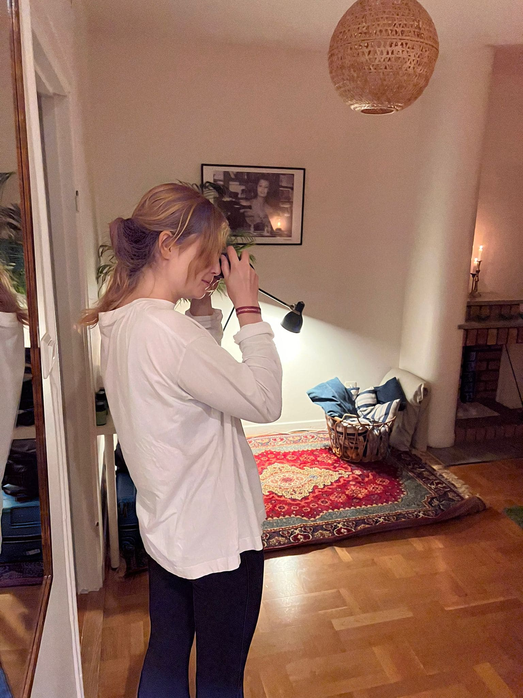
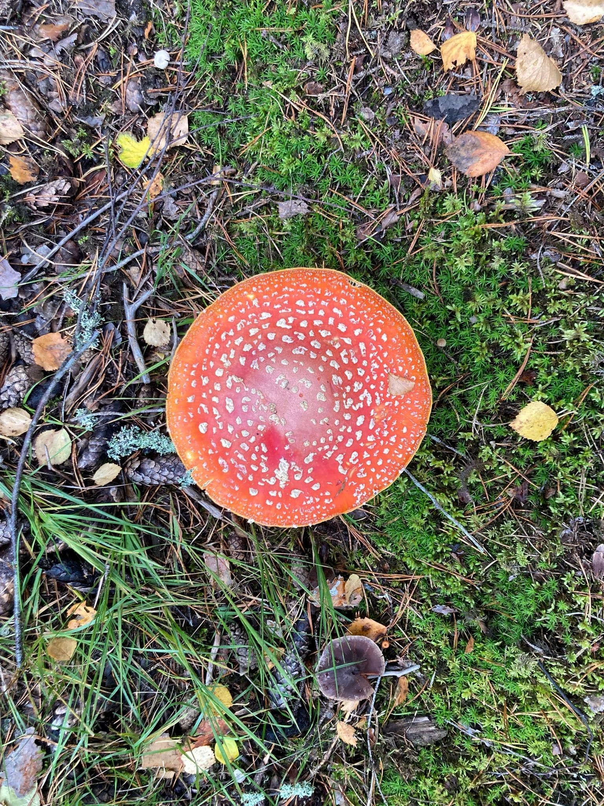

Fjärde veckan
...über Regenhosen, mehr schwedische Weisheiten und Bierpreise
Ein Monat ist noch nicht ganz vorbei und schon muss ich diesen Beitrag mit einer kleinen Warnung beginnen. Es könnte sich an der ein oder anderen Stelle vielleicht so etwas wie Alltag eingeschlichen haben. Aber keine Sorge, ich habe natürlich mein Bestes gegeben um dagegen zu halten. Ob meine Versuche erfolgreich waren oder ob ich vielleicht einfach jetzt schon den schwedischen Zustand von lagom ("genau richtig") zwischen Pflicht und Vergnügen erreicht habe, bleibt euch überlassen zu bewerten..

Flugsvamp.

Nationalpark Tyresta.